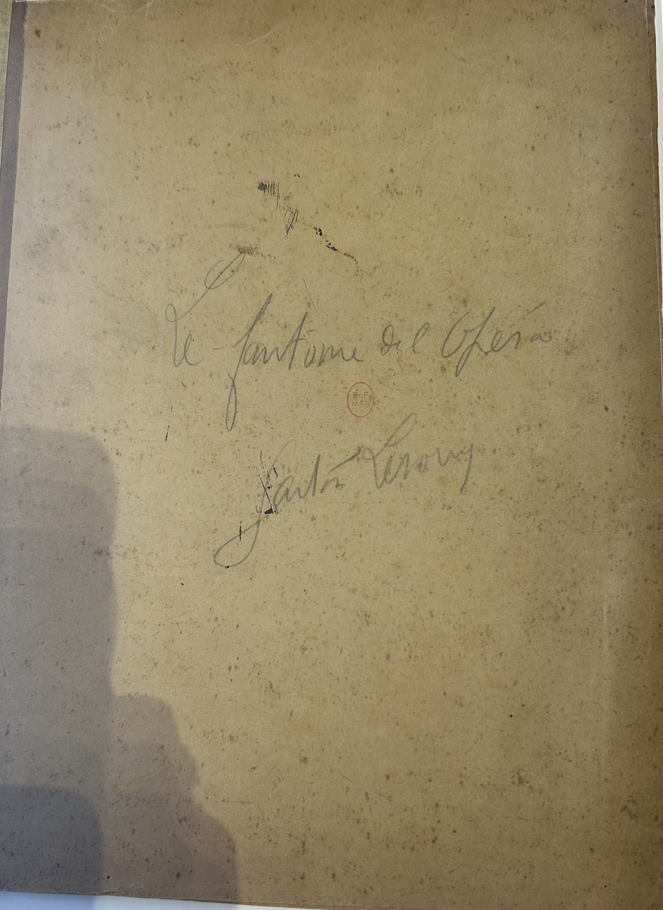
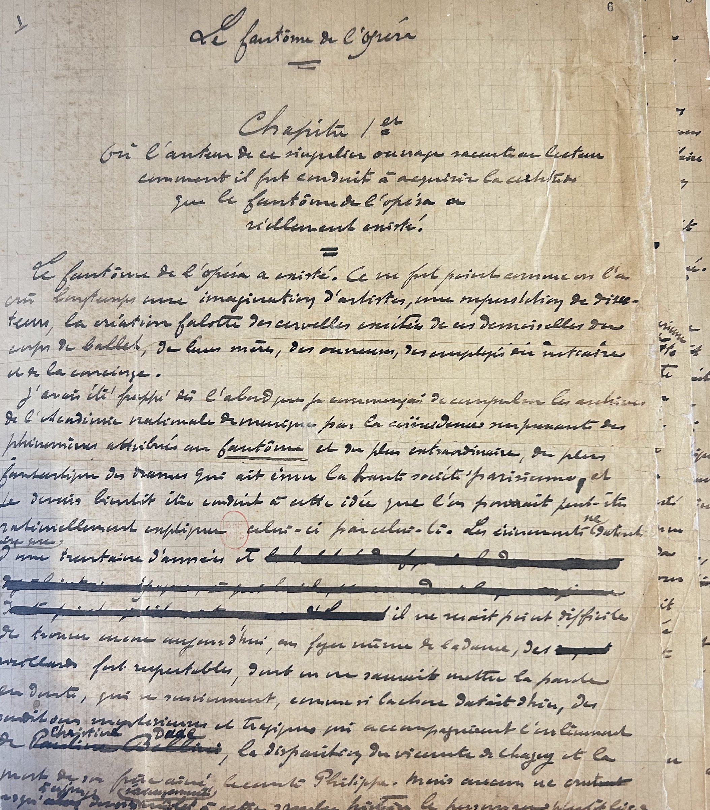
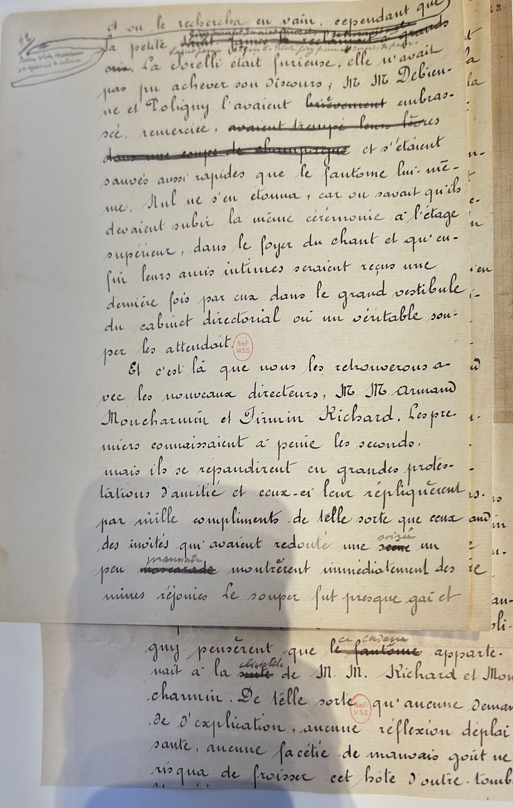

Le Fantôme de l’Opéra
Écrit à Nice, à la Villa Les Cascades du Mont Boron. Publié en feuilleton quotidien dans Le Gaulois de septembre 1909 à janvier 1910, puis chez Pierre Lafitte en 1910.
Le manuscrit
Dans le manuscrit, Christine s’appelait d’abord Pauline. L’auteur a noté sur une feuille de travail : « Remplacer Pauline par Christine. »







D’où vient l’histoire
Selon la famille, l’histoire est inspirée de son métier de journaliste et de reporter, comme beaucoup de ses romans, et de plusieurs faits divers :
- L’incendie du 28 octobre 1873 à l’Opéra Le Peletier. Une rumeur dit qu’il aurait emporté une ballerine, et que son fiancé Ernest, pianiste, fut défiguré. Il se serait réfugié dans le lac souterrain de l’Opéra Garnier.
- La chute du lustre de l’Opéra Garnier, qui tua une spectatrice en 1896.
- 1907 : découverte de restes humains par des ouvriers dans les souterrains de l’Opéra Garnier, alors qu’ils enfouissaient des urnes contenant des phonographes.
Gaston Leroux était alors en plein divorce de son premier mariage, une période compliquée : selon la famille, le divorce mit quinze ans à être acté.
Autres feuillets du manuscrit



Le Gaulois


L’édition de 1938 paraît chez Raymond Schall, rue Caulaincourt, au pied de la butte Montmartre.
Adaptations
La famille conserve de nombreuses adaptations du Fantôme de l’Opéra : dessins animés (5 DVD), bandes dessinées, réécritures, films, séries.
Ce n’est pas un masque. C’est une voix.
- Famille Gaston Leroux : réponses au questionnaire LEROUX100, novembre 2026
- BnF, Département des Manuscrits : manuscrit du Fantôme de l’Opéra (photographies transmises par la famille)